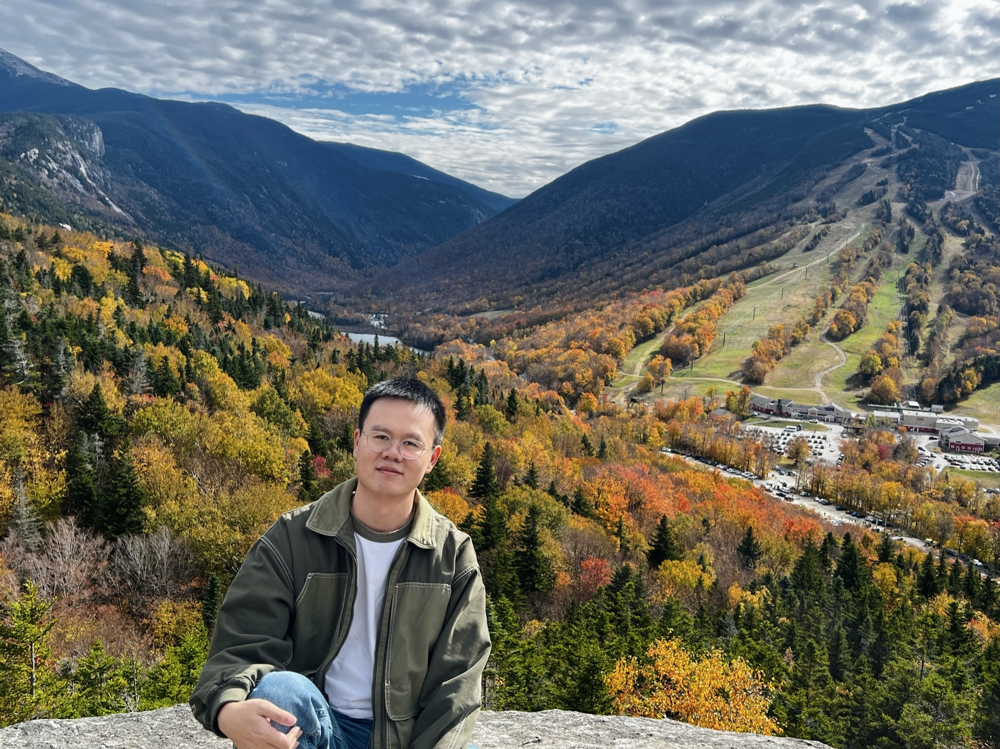

Data-Centric AI, LLM Reasoning, Search Ranking, Recommendation System
I have completed my Ph.D. defense in Computer Science at Arizona State University, with degree conferral expected in May 2026. I have industry experience building large-scale search and recommendation systems at Tencent and Alibaba. My research focuses on LLM reasoning, agent systems, and representation learning, with an emphasis on improving accuracy, stability, and efficiency under practical constraints. I have also worked on LLM reliability and structured knowledge extraction during internships at NEC Laboratories America and A*STAR Singapore, and published in venues such as TKDD, KDD, NeurIPS, AAAI, IJCAI, CIKM, and EMNLP.
Developing data-centric methods to enhance the robustness and effectiveness of machine learning through feature transformation, robust data representations, and learning from unlabeled data.
Creating multi-agent frameworks for structured knowledge extraction and reasoning, enabling collaborative AI systems to solve complex problems through distributed intelligence.
Developing interpretable methods for equation discovery to uncover scientific patterns from data, bridging AI and scientific discovery for automated hypothesis generation.
I have published papers in top-tier venues, including KDD, NeurIPS, EMNLP, AAAI, CIKM, IJCAI, and TKDD. A complete list of publications is available on Google Scholar.
Data Science & System Security,NEC Laboratories America, Princeton
05/2025 - 08/2025
Developed multi-agent LLM frameworks for structured knowledge extraction (procedural graph representation), supporting downstream retrieval-augmented generation (RAG). Explored how structured knowledge enables personalized LLM training by grounding user-specific workflows into structured representations
Institute of High Performance Computing, A*STAR, Singapore
05/2024 - 08/2024
Investigated trustworthiness of LLMs in medical applications, with emphasis on understanding how jailbreak attacks compromise system reliability. Conducted systematic analysis of jailbreak strategies as a foundation for designing future LLM safety and protection mechanisms.
Platform and Content Group, Tencent, Beijing
10/2020 - 11/2022
Led algorithm design for time-sensitive search scenarios (e.g., weather, stock, news), serving hundreds of millions of users. Designed methods for query time-sensitivity detection, retrieval pipeline optimization, and time-aware ranking and presentation to enhance freshness and relevance in search results.
Digital Media & Entertainment Group, Alibaba, Beijing
06/2019 - 10/2020
Built recommendation systems for long- and short-form video platforms (movies, TV shows, variety shows, and micro-videos). Worked on video content understanding (e.g., tagging, user profiling) and video retrieval, improving large-scale recommendation quality and user engagement.